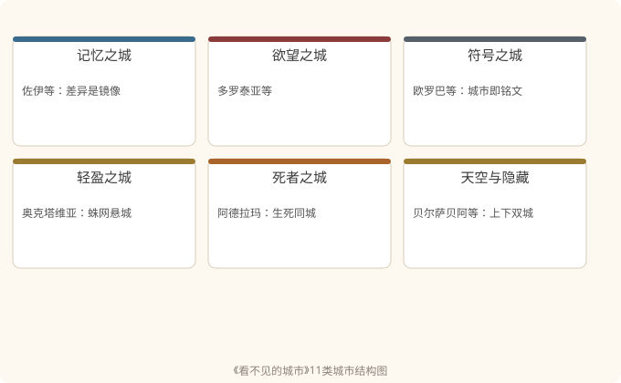

看不见的城市
一、基本信息
| 作者 | 卡尔维诺 |
|---|---|
| 成书/出版 | 1972年出版（Britannica） Italo Calvino — Encyclopaedia Britannica（百科全书） |
| 国别/地区 | 意大利 |
| 时代 | 现当代 · 20世纪 |
| 体裁 | 长篇小说（框架叙事/散文诗体） |
| 语言 | 意大利语 |

《看不见的城市》11类城市结构图（主题·结构图）
二、创作背景
结构（通说）：马可·波罗向忽必烈汗讲述55座城市——分11组主题（记忆、欲望、符号、轻盈、贸易、眼睛、名字、死者、天空、连绵、隐藏），穿插忽必烈的追问与帝国的黄昏。以《马可·波罗行纪》的东方想象为戏仿源（通说）。
写作背景：卡尔维诺巴黎时期的'寓言转向'（Britannica：In the 1950s he shifted to fantasy and allegory）之延续；1972年出版（Britannica 列举 Invisible Cities (1972)）。
文体谱系：博尔赫斯的观念小说、结构主义符号学（通说待核）与《命运交叉的城堡》的塔罗叙事相接。
三、内容脉络
框架：忽必烈汗听着马可·波罗讲述'他帝国里一座座城市'——但'我讲述的城市从来不是威尼斯'（原文意，待核）——每座城市都是记忆、欲望或恐惧的变形。
城市类型举隅：记忆之城（'佐伊'——所有差异都是镜像）、欲望之城（'多罗泰亚'）、轻盈之城（'奥克塔维亚'——悬在深渊上的蛛网之城）、符号之城（'欧罗巴'）、死者之城（'阿德拉玛'——死人与活人同城）、天空之城（'贝尔萨贝阿'）……
主题递进：城市的目录即帝国的解体——忽必烈的帝国'是记忆与欲望的混合物'，马可的回答：'对那些城市，我不敢说；对威尼斯，我也不敢说'（结尾原文意，待核）——'看不见的城市'就是语言自身。
四、主要人物表
| 人物 | 身份 | 说明 |
|---|---|---|
| 马可·波罗 | 旅行者·讲述者 | 以手势与物件（棋子、威尼斯的木片）'翻译'城市——语言的极限表演 |
| 忽必烈汗 | 帝国之主 | '我无法探知我帝国的一切'——倾听者与提问者 |
| 55座城市 | 真正的'人物' | 每城一个观念：记忆/欲望/符号/轻盈/贸易/眼睛/名字/死者/天空/连绵/隐藏 |
五、主题与艺术特点
- 城市即心灵：每座城是人的某种心理状态的空间化——'城市像梦，由欲望与恐惧构成'（原文意，待核）。
- 帝国的解体：叙事的推进伴随帝国的黄昏——征服者最终只能'倾听'（通说）。
- 语言与不可言说：马可讲述的城市'从来不是威尼斯'——所指的滑动（符号学语境，通说）。
- 艺术特点：散诗体的'城市速写'、数学般的组合结构、框架与枝叶的嵌套（通说）。
六、影响与评论
- Britannica（Calvino 条目）：Invisible Cities (1972) 为其'用奇想结构探索偶然、巧合与变化'的代表之作。
Italo Calvino — Encyclopaedia Britannica（百科全书） - 建筑与城市规划：本书成为建筑系与城市研究的'文学教材'（通说待核）。
Italo Calvino — Encyclopaedia Britannica（百科全书） - 对中文写作的影响：'看不见的城市'体例在中文非虚构与散文中的仿写（通说待核）。
Italo Calvino — Encyclopaedia Britannica（百科全书）
七、阅读建议
难点
- 无情节——按'城市类型'与对话推进的结构读。
- 每篇2—3页，密度极高——适合笔记式慢读。
- 结尾的'威尼斯之谜'需要全书读完再解。
- 张密译《看不见的城市》（译林出版社，通说待核）：通行本。
- 英译：William Weaver 译（1974，通说待核）。
通读（一天可完）→ 挑'奥克塔维亚''欧罗巴''忒休斯'等名篇精读 → 重读框架对话（开头与结尾）→ 配《美国讲稿》'轻'章。
八、待核实
- 1972年11月 Einaudi 出版细节待核。
- 55城的11组划分与各章标题的对应表待核。
- 张密译本信息待核。
- 建筑学接受史的文献待核。
本页主要来源
卡尔维诺的其他收录作品：看不见的城市